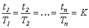

1 . 教学安排
2 . 预定时间标准的定义、特点及用途
3 . 方法时间衡量
4 . 模特法及其应用实例
 模特法原理
模特法原理
模特法的时间单位
模特法的特点
模特法动作分类
模特法的动作分析
动作分析时使用的其他符号
模特法分析记录表
动作的改进
模特法应用及标准时间制定
5 . 思考与练习题
 返回课程学习首页
返回课程学习首页
模特法的时间单位
从理论上讲，时间单位量值愈小，所测其他动作的时间值愈精确。
对于各种PTS法时间量值的一般选择原则是，应小于该种PTS法中速度最快的基本动作，这动作一次所需时间值的某一量值就作为该方法的时间单位。
模特法在人体工程学实验的基础上，根据人的动作级次(见动作经济原则第二条)，选择以一个正常人的级次最低、速度最快、能量消耗最少的一次手指动作的时间消耗值；作为它的时间单位，即1MOD=0.129s。模特法的21种动作都以手指动一次(移动约
大量的实验研究表明，不同人以最快速度进行操作与他以正常速度进行操作，其动作所需时间是不相等的。但是，这两种速度所需时间之比是一常数(或接近常数)。
假设：身体某一部位最快动作的时间值设为t1，身体同一部位正常动作时间值为T1；身体其他部位最快动作时间值为t2，身体其他部位正常动作时间值T2；依次类推，则：
 由此可得：
因此可以说两个动作的最快速度所需时间之比，等于该动作的正常速度所需时间之比。
由于正常速度仅是时间研究人员头脑中的一个概念，在实际中难以确定。而动作的最快速度所需时间是可以通过大量实测，用数理统计方法求其代表值，即可得K值。所以，只要令t1为手指动作一次的正常值，就可根据上式求得身体其他部位一次动作与手指一次动作的比值，从而决定身体其他部位的模特数。实验表明，其他部位动作一次的MOD数都大于1MOD，经四舍五入，即得其他动作一次所需的正常时间值都为手指动作一次MOD数的整数倍。